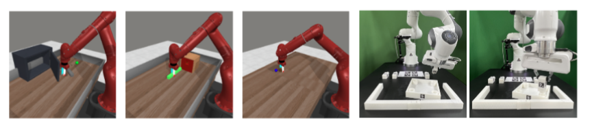
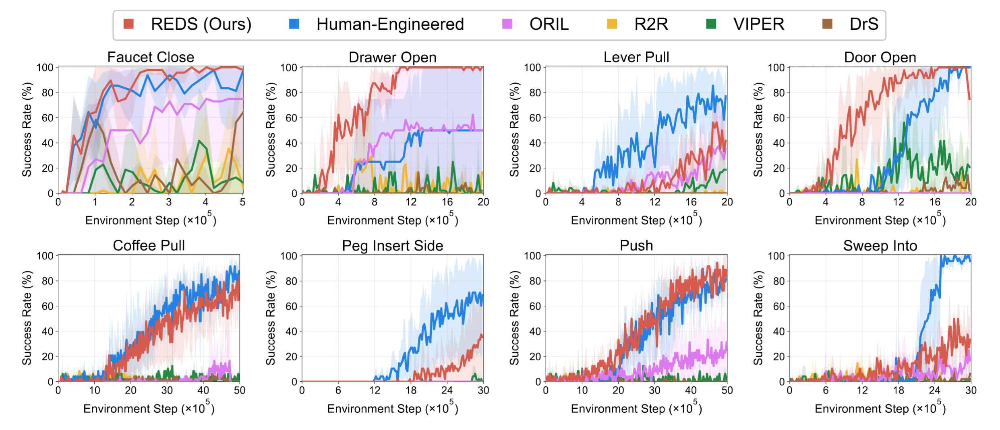
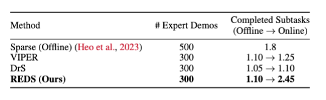
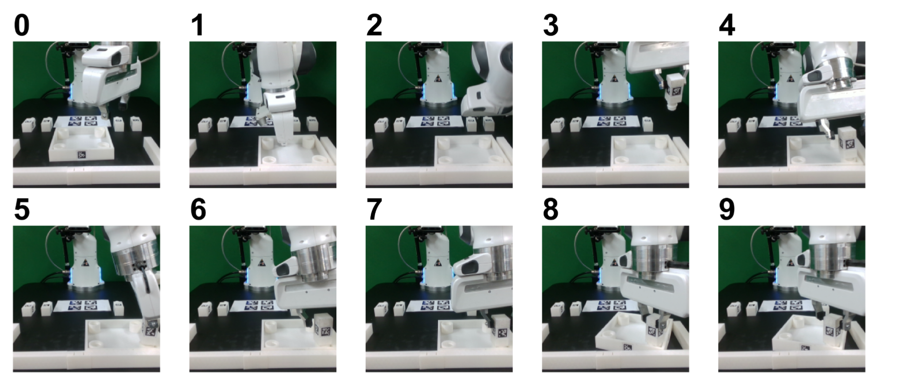
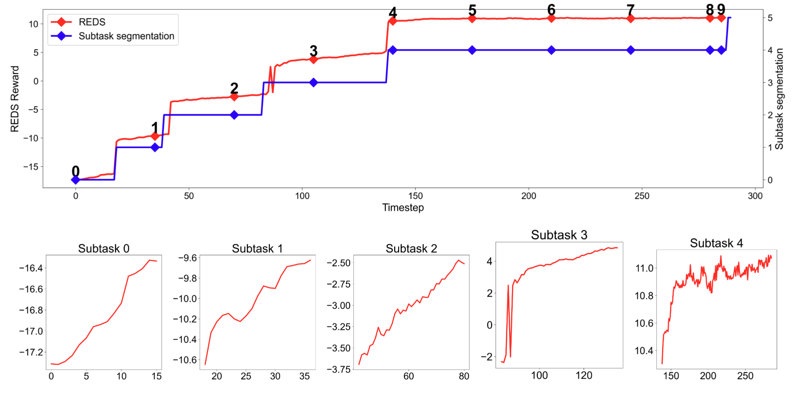
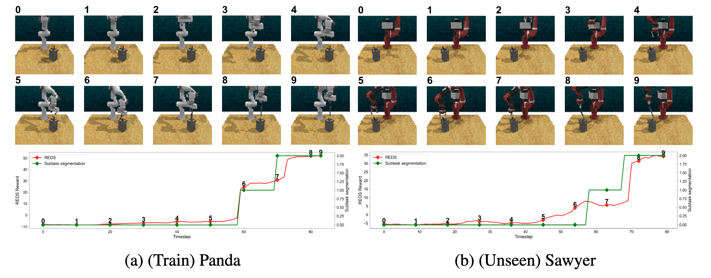

We propose REDS: REward learning from Demonstration with Segmentations, a new reward learning framework that leverages action-free videos with minimal supervision by treating segmented video demonstrations as ground-truth rewards.
Our main idea is to leverage expert demonstrations annotated with the ongoing subtask as the source of implicit reward signals . We train a reward model conditioned on video segments and corresponding subtasks with 1) contrastive loss to attract the video segments and corresponding subtask embeddings and 2) EPIC loss to generate reward equivalent to subtask segmentations. In online RL, REDS infers the ongoing subtask using only video segments at each timestep and computes the reward with that.

We study REDS in various robotic manipulation tasks from Meta-world in simulation and robotic furniture assembly tasks from FurnitureBench in the real-world.

REDS consistently outperforms various prior reward learning methods in Meta-World, and even surpasses the performance of human-engineered reward functions in several tasks.



REDS demonstrates superior performance in real-world furniture assembly tasks through online fine-tuning, achieving a score of 2.45 with just 300 demonstrations compared to baseline IQL's 1.8 with 500 demonstrations. This strong performance, combined with minimal human intervention requirements, showcases REDS as a promising approach for scaling reinforcement learning to diverse real-world robotics applications.

We also show that REDS can generalize to unseen robot embodiments, showcasing its potential for real-world deployment.
@inproceedings{kim2025reds,
title={Subtask-Aware Visual Reward Learning from Segmented Demonstrations},
author={Changyeon Kim and Minho Heo and Doohyun Lee and Honglak Lee and Jinwoo Shin and Joseph J. Lim and Kimin Lee},
year={2025},
booktitle={International Conference on Learning Representations},
}